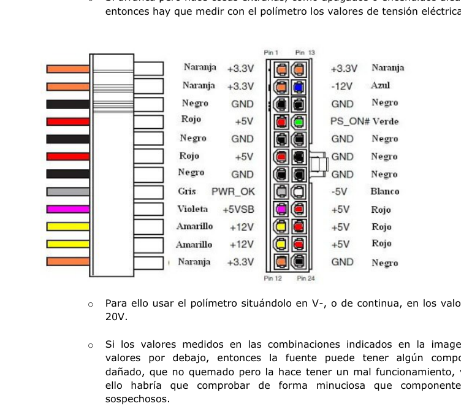

Ficha de diagnóstico · Alimentación
Fuente de alimentación ATX
El equipo no enciende, se reinicia o se apaga repentinamente
Fuente PDF: Páginas 3–4¿Qué estamos diagnosticando?
Una fuente puede fallar por falta de alimentación, por tensiones fuera de tolerancia o por problemas que solo aparecen bajo carga.
Seguridad y actualización: No abrir la carcasa de una fuente ATX ni tocar sus componentes internos: los condensadores pueden conservar energía peligrosa. No realizar pruebas de 230 V ni puentes sobre fuente conectada sin procedimiento y supervisión profesional.
Material y herramientas
Multímetro (personal formado)Fuente ATX de sustitución conocidaManual y conector ATX
Procedimiento paso a paso
- Comprobar que el cable y la toma funcionan sin medir directamente la red de 230 V en un aula.
- Con el equipo desconectado, inspeccionar desde el exterior el conector ATX, el interruptor y los cables.
- Si hay olor a quemado, daño visible o ruidos eléctricos: detener pruebas y sustituir la fuente.
- Un técnico supervisa las medidas de salida de baja tensión de la fuente, con la configuración adecuada del multímetro.
- Comparar con las referencias ATX: +12 V (11,40–12,60 V), +5 V (4,75–5,25 V), +3,3 V (3,135–3,465 V).
- Si sigue habiendo dudas, usar una fuente compatible y conocida como buena para una prueba de sustitución controlada.
Interpretar el resultado
Que el ventilador gire o que un puente PS_ON permita el arranque NO demuestra que la fuente entregue tensión estable con carga.

Imagen tomada del PDF original, Páginas 3–4. Algunos datos del esquema pueden corresponder a equipos antiguos.
Hoja de intervención
0 de 5 pasos comprobados
Documentación complementaria
Limpieza segura del ordenador · iFixit
Ver otras averías